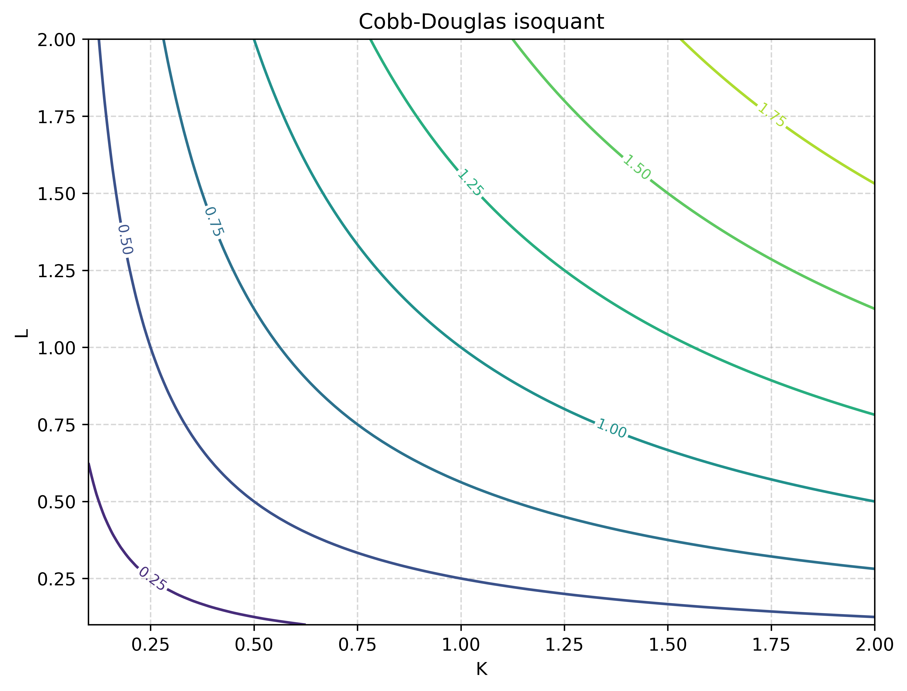
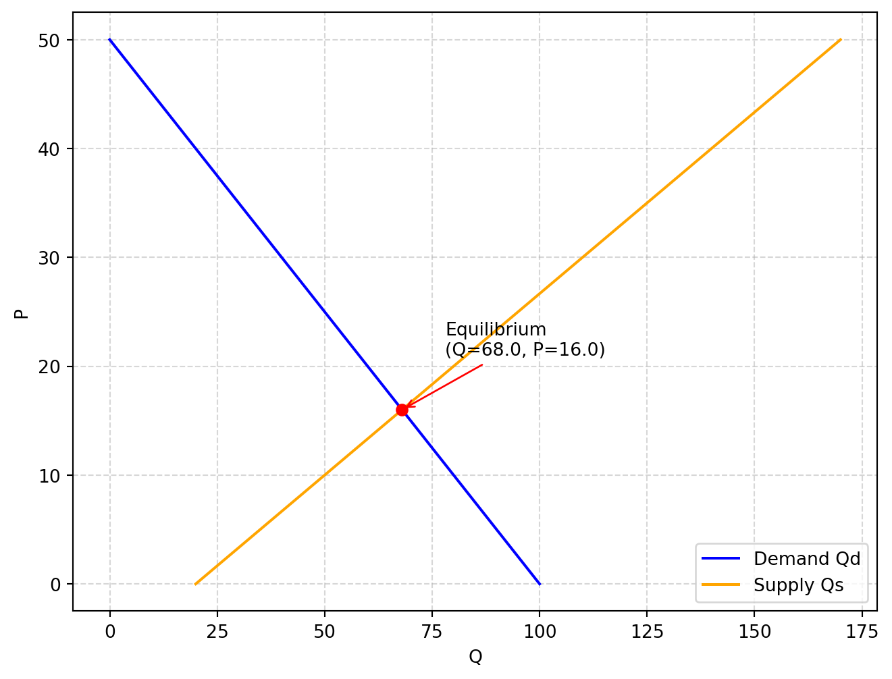

school = "Nanjing Normal University"
price = 12.5
quantity = 20
total_sales = price * quantity
total_sales250.0这一部分简要介绍Python语言的基本内容，包括变量的类型、条件语句、循环、自定义函数和类等内容。
变量是用来存储数据的“容器”，可以赋不同类型的值。Python常见数据类型有：整数(int)、浮点数(float)、字符串(str)、布尔(bool)等。
变量赋值把一个具体的值存储到一个变量中，方便后续使用和操作。要注意变量命名的规则：
if, for, class 等）例如
school = "Nanjing Normal University"
price = 12.5
quantity = 20
total_sales = price * quantity
total_sales250.0如果命名方式不符合要求，软件将返回错误。将下面例子中表示注释的#去掉，再试运行命令，看提示的错误类型是什么？
#1student = "Bob"
# class = "Math"
# student-name = "Tom"
# t&2 = 30 上面的class，属于软件内部保留的33个关键词之一，注意在命名时应避免与关键词冲突：
import keyword
print(keyword.kwlist)['False', 'None', 'True', 'and', 'as', 'assert', 'async', 'await', 'break', 'class', 'continue', 'def', 'del', 'elif', 'else', 'except', 'finally', 'for', 'from', 'global', 'if', 'import', 'in', 'is', 'lambda', 'nonlocal', 'not', 'or', 'pass', 'raise', 'return', 'try', 'while', 'with', 'yield']下面是几种常用的基本数据类型，可以通过type()函数查看一个对象的类型。
整数（int）：用于表示整数类型的数据。
a = 5
print(type(a))
#
b = 10
c = b/a
print(c)<class 'int'>
2.0注意两个整数的比值为浮点数。
整数int是类（class）的一种。在Python中，所有的数据类型，包括数字、字符串、列表等，都是通过类来定义的。如果我们输入变量的名字和一个点，a.，Python会出现提示可能的属性（attributes）或方法（methods）。

例如，.is_integer()判断数值是否为整数，.as_integer_ratio()返回一对整数，其比率与原始整数完全相等，且具有正数分母:
a.is_integer()
a.as_integer_ratio()(5, 1)浮点数（float）：用于表示带小数点的数值
pi = 3.14159
radius = 1.75
area = pi * radius **2
print(type(pi))
print(area)<class 'float'>
9.621119375字符串（str）：用于表示文本数据
可以用双引号或者 单引号定义字符串。当字符串较长时，可以用三引号进行定义。例如：
sentence = "Python's syntax is easy to learn."
multiline = """这个句子
被我
分成了几行。这样
看起来，像诗一样。
"""字符串有许多属性和方法，在进行文本分析时会经常用到。如 Table 1 所示：
| 方法 | 功能说明 | 示例 |
|---|---|---|
s.lower() |
转换为小写 | "Hello".lower() → "hello" |
s.upper() |
转换为大写 | "hello".upper() → "HELLO" |
s.capitalize() |
首字母大写，其余小写 | "hello world".capitalize() → "Hello world" |
s.title() |
每个单词首字母大写 | "hello world".title() → "Hello World" |
s.strip() |
去除字符串首尾空白字符 | " hello ".strip() → "hello" |
s.lstrip() |
去除左侧空白 | " hello".lstrip() → "hello" |
s.rstrip() |
去除右侧空白 | "hello ".rstrip() → "hello" |
s.replace(old, new) |
替换子串 | "banana".replace("a", "o") → "bonono" |
s.find(sub) |
查找子串位置，找不到返回 -1 |
"hello".find("l") → 2 |
s.count(sub) |
统计子串出现次数 | "banana".count("a") → 3 |
s.startswith(prefix) |
是否以指定前缀开头 | "hello".startswith("he") → True |
s.endswith(suffix) |
是否以指定后缀结尾 | "hello".endswith("lo") → True |
s.split(sep) |
按分隔符拆分字符串 | "a,b,c".split(",") → ["a", "b", "c"] |
sep.join(iterable) |
使用分隔符连接字符串序列 | ",".join(["a", "b", "c"]) → "a,b,c" |
注意，当对字符串使用某一方法时，虽然结果显示了变化，并没有改变原本对字符串。如果要保存结果可以赋值。
# 例：将日期字符串按“-”分割成年、月、日
date_str = "2024-06-01"
parts = date_str.split("-")
year, month, day = parts
print(f"年份：{year}，月份：{month}，日期：{day}")
# 例：用join方法将列表中的单词拼接成一句话
words = ["Python", "is", "fun"]
sentence = "$#$_".join(words)
print(sentence) 年份：2024，月份：06，日期：01
Python$#$_is$#$_fun布林类型（bool）：只有True和False两个值，常用于条件判断
name = "Jane"
age = 20
score = 57
is_adult = age >= 18
has_passed = score >= 60
print(type(is_adult)) # <class 'bool'>
print(f"是否成年：{is_adult}")
print(f"是否及格：{has_passed}")<class 'bool'>
是否成年：True
是否及格：Falseprint与 f-string经常需要将运算结果或字符串显示出来，主要的函数是上面已经出现多次的print()函数，它可以输出字符串、变量、表达式等，并支持格式化输出。
print(multiline)这个句子
被我
分成了几行。这样
看起来，像诗一样。
在Python语言中，字符可以使用单引号或者双引号表示，在输出带引号的字符串时，可以利用该特点。例如
print('She said, "Hello!"') # 外单内双
print("It's a nice day.") # 外双内单She said, "Hello!"
It's a nice day.如果字符串本身包含同样的引号，可以用转义符”\“避免冲突
print('It\'s a nice day.')
print("She said, \"Hello!\"")It's a nice day.
She said, "Hello!"三引号可以包含单双引号和多行内容
print("""他说："It's OK!" """)他说："It's OK!" 格式化输出常用的有`.format()方法和f-string方法。
format方法
.format()方法的基本用法如下：
print('We are the {} who say "{}!"'.format('knights', 'Ni'))We are the knights who say "Ni!"也可以使用关键字参数：
print('This {food} is {adjective}.'.format(
food='spam', adjective='absolutely horrible'))This spam is absolutely horrible.f-string
f-string（格式化字符串字面量）是 Python 3.6 及以上版本提供的一种字符串格式化方式，它让我们可以在字符串中直接嵌入变量或表达式。
import math
print(f'The value of pi is approximately {math.pi:.3f}.')The value of pi is approximately 3.142.其中，.3f表示小数点3位；
输出结果时也可以进行数学运算：
year = 2024
GDP_per_capita = 95749
growth = 0.051
my_string = f"{year}年，人均国内生产总值为{GDP_per_capita/10000:.3f}万元，比去年增长{growth:.3%}"
print(my_string)2024年，人均国内生产总值为9.575万元，比去年增长5.100%注意 %将浮点数转换位百分数显示。
运算符用于对数据进行各种操作，主要包括：
+（加），-（减），*（乘），/（除），//（整除），%（取余），**（幂）==（等于），!=（不等于），>（大于），<（小于），>=（大于等于），<=（小于等于）and（与），or（或），not（非）=（赋值），+=，-=，*=，/= 等in，not in（判断元素是否属于序列）is，is not（判断两个对象是否为同一对象）下面分别介绍常用的运算符及其用法。
加减乘除等算术运算符与通常的表示方法类似，例如，将华氏度转换位摄氏度的公式为：
例如，华氏温度和摄氏温度的转换公式：
\[ {}^{\circ}C = \frac{5}{9}({}^{\circ}F - 32) \]
F = 92
C = 5/9 * (F - 32)
print(f"F = {F}, C = {C:.2f}")F = 92, C = 33.33值得注意的是//（整除），%（取余），**（幂）：
a = 15
b = 4
print(a/b)
print("a // b =", a // b)
print("a % b =", a % b)
print("a ** b =", a ** b) 3.75
a // b = 3
a % b = 3
a ** b = 50625比较运算符用于比较两个值，结果为布尔类型（True或 False ）。
print("a > b:", a > b)
print("a == b:", a == b)
print("a != b:", a != b) a > b: True
a == b: False
a != b: True逻辑运算符用于连接多个条件表达式，常用于复合条件判断。
x = 8
y = 3
#
print((x > 5) and (y < 5))
print((x < 5) or (y < 5))
print(not (x > y)) True
True
False要注意and 和or组合的结果。
print(True and False)
print(True or False)False
True赋值运算符用于给变量赋值或在原有基础上进行运算后赋值:
x = 10
x += 5
x -= 3
x *= 2
x /= 4
x //= 2
x %= 2
x **= 3
#
print(x)1.0成员运算符用于判断某个元素是否属于某个序列，如列表、元组、字符串等。例如：
print('is' in 'this')
for i in range(5):
print(i)True
0
1
2
3
4条件语句（if语句）用于根据条件判断执行不同的代码块，基本结构：
# if 条件:
# 代码块1
# elif 其他条件:
# 代码块2
# else:
# 代码块3例如，使用if-esle判断是奇数还是偶数。注意缩进：
num = 8
if num%2 == 0:
print(f"{num} is even.")
else:
print(f"{num} is odd.")8 is even.以世界银行经济体收入分组标准为例：
世界银行按照人均国民收入把世界各经济体分成四组，如 Table 2 所示，中、低收入国家被称为发展中国家，高收入国家被称为发达国家。
| 经济体分组 | 划分标准（人均国民总收入） |
|---|---|
| 低收入经济体 | 1145 美元以下 |
| 中等偏下收入经济体 | 1146—4515 美元 |
| 中等偏上收入经济体 | 4516—14005 美元 |
| 高收入经济体 | 14005 美元以上 |
可以使用嵌套条件语句if-elif-else来进行判别：
gni = 13660
if gni <= 1135:
economy = "低收入经济体"
elif gni <= 4465:
economy = "中等偏下收入经济体"
elif gni <= 13845:
economy = "中等偏上收入经济体"
else:
economy = "高收入经济体"
print(f"人均国民总收入为 {gni} 美元，属于：{economy}")人均国民总收入为 13660 美元，属于：中等偏上收入经济体再来看一个计算BMI（Body Mass Index）指数的例子： \[ BMI = \frac{weight(kg)}{height(m)^{2}} \]
height = 1.75
weight = 75
# 计算BMI
bmi = weight / (height ** 2)
if bmi < 18.5:
status = "偏瘦"
elif bmi < 24:
status = "正常"
elif bmi < 28:
status = "超重"
else:
status = "肥胖"
print(f"BMI = {bmi:.2f}，{status}")BMI = 24.49，超重Python 中主要有两种循环结构：for 循环和 while 循环。 for 循环用于遍历序列（如列表、字符串、元组等）或可迭代对象中的元素，而 while 循环则在给定条件为真时重复执行一段代码。
例如，对列表中的元素循环：
fruits = ["apple", "banana", "cherry"]
for fruit in fruits:
print(fruit)apple
banana
cherry下面的例子计算从1到100之和，注意range()函数的用法：
total = 0
for i in range(1, 101):
total += i
print("1到100的和为：", total)1到100的和为： 5050while循环是一种基于条件判断的循环结构，当条件为True时，循环体会反复执行，直到条件变为False为止。另外， while循环要注意循环变量的更新，否则可能会造成死循环。
例如，同样计算1到100的和
total = 0
n = 1
while n <= 100:
total += n
n += 1
print("1到100的和为：", total)1到100的和为： 5050列表（list）、字典（dict）、元组（tuple）、集合（set）是Python中常用的容器类型。
列表是最常用的数据类型之一，新建列表用[]进行定义。可以用索引（从0开始）访问列表的元素。
numbers = [10, 20, 30, 40]
fruits = ["apple", "banana", "cherry"]
print(numbers[0])
print(fruits[-1])10
cherry可以根据索引使用:对列表进行切片（slicing）。
print(numbers[1:3])
print(numbers[::-1])[20, 30]
[40, 30, 20, 10]列表是可变的（mutatable），元素可以更改。例如，将numbers的第2个元素（索引1）的值替换为25：
numbers[1] = 25
print(numbers) [10, 25, 30, 40]可以使用.append()、.insert()方法往列表添加元素:
fruits.append("orange")
fruits.insert(1, "pear")
print(fruits) ['apple', 'pear', 'banana', 'cherry', 'orange']del .remove()和.pop()都可以用来删除元素：
del numbers[2] # 按索引删除
fruits.remove("banana") # 按值删除
print(numbers)
print(fruits)
fruit = fruits.pop()
print(fruit)[10, 25, 40]
['apple', 'pear', 'cherry', 'orange']
orange经常涉及遍历列表的操作，尤其是for循环：
for fruit in fruits:
print(fruit)apple
pear
cherry例：计算净现值
如果某项资产在多个时间周期内支付一系列收益流，那么我们可以使用贴现率来计算这整个收益序列对消费者的当前价值。 用 \(y_t\) 表示第 \(t\) 期的收益，并假设这些收益现在是已知的，贴现率 \(r\ge 0\)。用一个求和表达式来表示整条收益序列的净现值总价值：
\[ P_{0} = \sum_{t=0}^{T} (\frac{1}{1+r})^{t}y_{t} \]
将假设的收益序列保存为列表： y = [-100, 30, 60, 50, 40]，贴现率假设为0.05。我们用遍历列表的方法求和：
y = [-100, 30, 60, 50, 40]
r = 0.05
P0 = 0
for t in range(len(y)):
P0 = P0 + y[t] / (1 + r) ** t
print(f"The Total Present Value = ：{P0:.2f}")The Total Present Value = ：59.09元组（tuple）是有序、不可变的元素集合，用()表示。
point = (3, 4)
colors = ("red", "green", "blue")
# 访问元素
print(point[0]) # 3
print(colors[-1]) # blue
# 元组不可修改
# point[1] = 5 # 会报错
# 单元素元组要加逗号
single = (5,)
print(type(single)) # <class 'tuple'>3
blue
<class 'tuple'>元组可以用于多变量赋值，许多函数返回的结果是元组的形式。
x, y = point
print(x, y) 3 4例：Jarque-Bera 正态性检验
给定 \(n\)个观测值的样本，样本偏度为： \[ S = \frac{\hat{\mu}_{3}}{\hat{\sigma}^{3}} = \frac{\frac{1}{n}\sum_{i=1}^{n}(x_{i}-\bar{x})^{3}}{(\frac{1}{n}\sum_{i=1}^{n}(x_{i}-\bar{x})^{2})^{3/2}} \]
样本峰度为： \[ K = \frac{\hat{\mu}_{4}}{\hat{\sigma}^{4}} = \frac{\frac{1}{n}\sum_{i=1}^{n}(x_{i}-\bar{x})^{4}}{(\frac{1}{n}\sum_{i=1}^{n}(x_{i}-\bar{x})^{2})^{2}} \]
Jarque-Bera正态性检验的核心思想是，如果一个数据集服从正态分布，那么它的偏度和峰度应该分别接近于0和3。统计量定义为： \[ Jarque-Bera = \frac{n}{6}\left(S^{2} + \frac{1}{4}(K - 3)^{2}\right) \]
我们用Scipy库的stats.jarque_bera()函数为例:
import scipy.stats as sc
import numpy as np
np.random.seed(123)
x = np.random.normal(loc=0, scale=1, size=100)
s, p = sc.jarque_bera(x=x)
print(f"Jarque-Berat Statistics = {s:.3f}, p-value = {p:.3f}")Jarque-Berat Statistics = 1.734, p-value = 0.420字典（dict）是一种用于存储键值对的数据结构。每个元素由“键”（key）和“值”（value）组成，键必须唯一且不可变，值可以是任意类型。 字典用大括号{}表示，键和值之间用冒号:分隔，多个键值对之间用逗号，分隔。
例如，下面是江苏省2023年的一些社会经济指标：
jiangsu = {"population": 8526,
"employment": 4840,
"GDP": 128222.16}
print(jiangsu)
print(jiangsu["population"]) {'population': 8526, 'employment': 4840, 'GDP': 128222.16}
8526可以很方便地往字典中添加或修改元素
jiangsu['capital city'] = "Nan jing"
print(jiangsu){'population': 8526, 'employment': 4840, 'GDP': 128222.16, 'capital city': 'Nan jing'}可以使用for循环 遍历字典，
for key, value in jiangsu.items():
print(key, value)population 8526
employment 4840
GDP 128222.16
capital city Nan jing应用：利用字典进行词频统计
统计一段文本中每个单词出现的次数，例如统计下面英文歌词代词出现的次数。首先将字母转化为小写字母，然后利用字符的切分方法.split()，将结果保存在字典freq之中，然后按词频排序，注意使用了lambda函数的方法。
text = """Generals gathered in their masses
Just like witches at black masses
Evil minds that plot destruction
Sorcerer of death's construction
In the fields, the bodies burning
As the war machine keeps turning
Death and hatred to mankind
Poisoning their brainwashed minds
Oh, Lord, yeah
Politicians hide themselves away
They only started the war
Why should they go out to fight?
They leave that role to the poor, yeah
Time will tell on their power minds
Making war just for fun
Treating people just like pawns in chess
Wait 'til their judgement day comes, yeah
Now in darkness, world stops turning
Ashes where their bodies burning
No more war pigs have the power
Hand of God has struck the hour
Day of judgement, God is calling
On their knees, the war pigs crawling
Begging mercy for their sins
Satan laughing, spreads his wings
Oh, Lord, yeah
"""
words = text.lower().split()
freq = {}
for word in words:
if word in freq: # 判断单词是否已在字典中
freq[word] += 1
else:
freq[word] = 1
sorted_freq = sorted(freq.items(),
key=lambda item: item[1],
reverse=True)
for word, count in sorted_freq[:10]:
print(f"{word}: {count}")the: 8
their: 7
war: 5
in: 4
yeah: 4
just: 3
minds: 3
of: 3
to: 3
they: 3Python内置函数是系统自带的、可以直接使用的函数，无需导入模块。常见内置函数有：abs(), len(),max(), min(), sum(), type(), int(), float(), str(), list(), dict(), range() 等。
print(abs(-10))
lst = [1, 2, 3, 4]
print(len(lst))
print(max(5, 8, 2))
print(min([7, 3, 9]))
print(sum([1, 2, 3])) 10
4
8
3
6自定义函数使用def关键字，指定函数名、参数列表和函数体。下面是几个简单的自定义函数的例子。
例如，定义一个不包含参数的函数print_hello()，其唯一作用是显示Hello World!：
def print_hello():
print("Hello World!")
print_hello()Hello World!函数通常带有参数，下面的例子定义了一个计算圆的面积的例子，需要输入参数半径radius的值：
import math
def area(radius):
res = math.pi * radius ** 2
print(f"半径为 {radius} 的圆的面积为 {res:.2f}!")
area(radius=2)半径为 2 的圆的面积为 12.57!这个函数运行的结果是在屏幕上显示一行字。如果将运行结果赋值给变量，结果如何？
res = area(radius=2)
print(res)半径为 2 的圆的面积为 12.57!
None看到结果显示的是None。原因在于函数定义时并没有返回结果，这就需要return结果：
import math
def area(radius):
return math.pi * radius ** 2
radius = 2
res = area(radius)
print(f"半径为 {radius} 的圆的面积为 {res:.2f}!")半径为 2 的圆的面积为 12.57!再例如，给定列表中都是数值，计算其平均数：
def mean(numbers):
total = sum(numbers)
N = len(numbers)
avg = total / N
return avg
nums = [3, 8, 1, 6]
print(mean(nums))4.5定义的函数经常会带有默认参数值，在调用函数时可以省略输入参数。例如下面的Cobb-Douglas生产函数的例子。
例：定义Cobb-Douglas函数
Cobb-Douglas生产函数是经济学中最常见的函数设定，例如一个规模报酬不变的CD函数表示为： \[ Y = AK^{\alpha}L^{1-\alpha} \]
其中，\(\alpha\) 表示资本的产出弹性，\(A\) 表示全要素生产率。下面定义一个CD函数，默认参数值 \(\alpha = 1/3, A = 1\)。
import numpy as np
import matplotlib.pyplot as plt
def cobb_douglas(K, L, alpha = 1/3, A = 1):
output = A * K**alpha * L**(1 - alpha)
return output
cobb_douglas(K=1, L=0.5)0.6299605249474366从微观经济学内容我们知道，等产量曲线是带来相同产出的要素组合 \((K, L)\) 形成的曲线，可以应用matplotlib中的contour函数绘制上面函数定义的等产量曲线：
# 生成K和L的网格
K = np.linspace(0.1, 2, 100)
L = np.linspace(0.1, 2, 100)
K_grid, L_grid = np.meshgrid(K, L)
Y = cobb_douglas(K_grid, L_grid, alpha=1/2)
#
fig, ax = plt.subplots(figsize=(8, 6), dpi=300)
contours = ax.contour(K_grid, L_grid, Y, levels=8, cmap='viridis')
ax.clabel(contours, inline=True, fontsize=8)
ax.set_xlabel('K')
ax.set_ylabel('L')
ax.set_title('Cobb-Douglas isoquant')
ax.grid(True, linestyle='--', alpha=0.5)
plt.show()
函数也可以有多个返回值（返回元组）
def min_max(numbers):
return min(numbers), max(numbers)
nums = [3, 8, 1, 6]
min, max = min_max(nums)可变参数：*args 接收任意数量的位置参数，类型为元组
def total(*args):
return sum(args)
print(total(1, 2, 3))
print(total(5, 10)) 6
15关键字参数：**kwargs 接收任意数量的关键字参数，类型为字典
def show_info(**kwargs):
for key, value in kwargs.items():
print(f"{key}: {value}")
show_info(name="Alice", age=20)name: Alice
age: 20BMI指数函数
同样，也可以将上面计算BMI指数的过程，定义为一个函数：
def bmi(height, weight):
"""计算BMI指数并返回数值和健康状况"""
bmi = weight / (height ** 2)
if bmi < 18.5:
status = "偏瘦"
elif bmi < 24:
status = "正常"
elif bmi < 28:
status = "超重"
else:
status = "肥胖"
return bmi, status
# 示例调用
bmi, status = bmi(1.75, 75)
print(f"BMI = ：{bmi:.2f}，{status}")BMI = ：24.49，超重世界银行经济体分组
自定义函数常与其他功能结合使用，例如Pandas库的df.apply()方法。
将前面例子中的if语句代码，赋值粘贴至某一个AI大模型平台，输入提示：“将下面的Python代码定义为一个函数”。得到类似下面的函数：
def classify_economy(gni):
if gni <= 1135:
economy = "低收入经济体"
elif gni <= 4465:
economy = "中等偏下收入经济体"
elif gni <= 13845:
economy = "中等偏上收入经济体"
else:
economy = "高收入经济体"
return economy
e = classify_economy(13500)
print(e)中等偏上收入经济体然后我们将该函数应用至世界银行数据。
我们需要从World Bank数据库下载2024年GDP per capita (current US$)数据，.dropna()函数用于删除缺失值，然后对列[‘NY.GDP.PACP.CD’]应用自定义的classify_economy()函数：
import pandas as pd
import wbgapi as wb
gdp_pc_2024 = wb.data.DataFrame("NY.GDP.PCAP.CD", time = 2024)
gdp_pc_2024 = gdp_pc_2024.dropna()
gdp_pc_2024['NY.GDP.PCAP.CD'].apply(classify_economy)economy
AFE 中等偏下收入经济体
AFW 中等偏下收入经济体
AGO 中等偏下收入经济体
ALB 中等偏上收入经济体
AND 高收入经济体
...
XKX 中等偏上收入经济体
YEM 低收入经济体
ZAF 中等偏上收入经济体
ZMB 中等偏下收入经济体
ZWE 中等偏下收入经济体
Name: NY.GDP.PCAP.CD, Length: 232, dtype: objectPython的模块（module）是包含一组功能的代码文件，可以通过import语句导入并使用其中的函数、变量等。分为三类： - python自带模块，不需要安装，直接import载入就可以了，如math包； - 第三方模块，通常需要下载安装，然后载入，如numpy，scipy等； - 自定义模块，自己写的实现某些功能的py文件的集合。
上面的例子中，实际上已经出现多次模块载入的应用，如Pandas、Numpy、Matplotlib等。
import math
print(math.sqrt(16))
print(math.pi)
#
from random import randint
print(randint(1, 10))
#
import datetime as dt
now = dt.datetime.now()
print(now)4.0
3.141592653589793
5
2025-08-16 18:30:19.434528可以把自定义的函数等保存在.py格式等脚本文件中，自定义模块。例如，在文件夹pyfiles中my_module.py文件保存了一个计算BMI的函数，我们载入该函数然后进行计算：
from pyfiles.my_module import bmi_index
#
bmi, status = bmi_index(1.75, 75)
print(f"BMI = {bmi:.2f}")
print(f"健康状况：{status}")BMI = 24.49
健康状况：超重Python 是面向对象编程的语言。面向对象编程（Object Oriented Programming，OOP）是一种程序设计思想。它把对象作为程序的基本单元，一个对象包含了数据和操作数据的函数，相同属性和操作方法的对象被抽象为类。类（Class）就类似上面所说的模具，而对象（Object）就是使用模具生产出的零件，对象就是类的实例（Instance）。
类（class）是面向对象编程（OOP）的核心概念，用于描述具有相同属性和方法的一类对象的模板或蓝图。 对象（object）是类的实例，拥有类定义的属性和方法。
所有的数据类型，值，变量，函数，类，实例等等一切可操作的基本单元在 Python 都使用对象（Object）表示。每个对象有三个基本属性：ID，类型和值，也即有一块内存中存储了一个对象，这块内存中一定存有这三个属性。
a = 1
print(id(a), type(a), a)
print(id(bmi_index), type(bmi_index), bmi_index)140724214383528 <class 'int'> 1
1799177547872 <class 'function'> <function bmi_index at 0x000001A2E756B060>0x0000024FE78C6AC0 是这个函数在计算机内存中的地址。
下面定义一个简单的类Student，它具有两个属性name、age，和一个方法introduce()：
class Student，定义了一个类，名为Student；def __init__(self, name, age)，__init__ 是一个特殊的方法，被称为构造方法。当创建一个类的实例（也就是一个对象）时，它会自动被调用，主要作用是初始化对象的属性；self 是一个约定俗成的参数，它代表了正在被创建的那个对象本身。Python 通过 self 来知道操作的是哪个具体的对象。name 和 age 是在创建对象时需要传入的参数，它们将被用来设置对象的初始属性。self.name = name 和 self.age = age，将传入的 name 和 age 参数的值赋给了对象的属性，这里分别存储学生的名字和年龄；def introduce(self)，定义introduce方法，它定义了 Student 对象可以执行的一个行为这里是打印一段包含学生姓名和年龄的自我介绍。stu1 = Student(name="Alice", age=20)，创建了一个具体的对象，或者说实例，并将其赋值给变量 stu1。此时调用了 Student 类的构造方法 __init__，将 "Alice" 赋给 name，20 赋给 age。stu1.introduce()，调用了 stu1 对象的 introduce 方法。class Student:
def __init__(self, name, age):
self.name = name
self.age = age
def introduce(self):
print(f"Hello，My name is {self.name}，I'm {self.age} years old.")
stu1 = Student(name="Alice", age=20)
stu2 = Student(name="Bob", age=22)
stu1.introduce()
stu2.introduce()Hello，My name is Alice，I'm 20 years old.
Hello，My name is Bob，I'm 22 years old.微观经济学中，简单的局部均衡市场模型表示为: \[ \begin{cases} Q_{D} = a - b\times P \\ Q_{S} = c + d\times P \\ Q_{D} = Q_{S} \end{cases} \]
我们定义一个类Market，将参数定义为属性，将需求、供给和均衡条件定义为三个方法：
demand计算给定价格的需求量；supply计算给定价格的供给量equilibrium计算均衡价格和均衡数量;class Market:
def __init__(self, a, b, c, d):
"""
Qd = a - b*P
Qs = c + d*P
"""
self.a = a
self.b = b
self.c = c
self.d = d
def demand(self, P):
return self.a - self.b * P
def supply(self, P):
return self.c + self.d * P
def equilibrium(self):
"""
Qd = Qs
"""
# a - b*P = c + d*P
# (a - c) = (b + d)*P
P_eq = (self.a - self.c) / (self.b + self.d)
Q_eq = self.demand(P_eq)
return P_eq, Q_eq
#
market = Market(a=100, b=2, c=20, d=3)
P_star, Q_star = market.equilibrium()
print(f"Equilibrium Price = {P_star:.2f}")
print(f"Equilibrium Quantity = {Q_star:.2f}")Equilibrium Price = 16.00
Equilibrium Quantity = 68.00可以利用定义的market类中的方法绘制需求曲线和供给曲线：
import numpy as np
import matplotlib.pyplot as plt
# 生成价格区间
P = np.linspace(0, 50, 200)
Qd = [market.demand(p) for p in P]
Qs = [market.supply(p) for p in P]
# 绘图
fig, ax = plt.subplots(figsize=(8, 6))
ax.plot(Qd, P, label="Demand Qd", color="blue")
ax.plot(Qs, P, label="Supply Qs", color="orange")
ax.scatter(Q_star, P_star, color="red", zorder=5)
ax.annotate(f"Equilibrium\n(Q={Q_star:.1f}, P={P_star:.1f})",
xy=(Q_star, P_star), xytext=(Q_star+10, P_star+5),
arrowprops=dict(arrowstyle="->", color="red"))
ax.set_xlabel("Q")
ax.set_ylabel("P")
ax.legend()
ax.grid(True, linestyle="--", alpha=0.5)
plt.show()